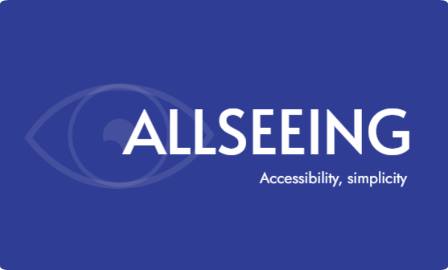

Dobrodošli na stranicu o pristupačnosti
Ova stranica namijenjena je pružanju smjernica, alata i preporuka za stvaranje digitalnih i obrazovnih materijala koji su prilagođeni osobama s oštećenjem vida. Pristupačnost nije samo tehnički izazov, već i društvena odgovornost koja osigurava jednak pristup informacijama svima bez obzira na njihove sposobnosti.
Kroz različite resurse na ovoj stranici, moći ćete naučiti kako koristiti boje, fontove, slike i strukturu teksta na način koji olakšava razumijevanje sadržaja. Također, upoznat ćete se s alatima koji pomažu u provjeri pristupačnosti i dodatnim tehnikama za poboljšanje inkluzivnosti.
Bez obzira jeste li nastavnik, dizajner, programer ili osoba koja stvara sadržaj, vjerujemo da će vam ova stranica pomoći u oblikovanju materijala koji su dostupni i razumljivi svima.
